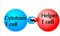

|
Tutorial to help answer the question:
___________ are responsible for the production of antibody against free pathogens
and soluble products from pathogens while ____________ destroy pathogen and virally
infected cells and abnormal cells.
Tutorial
Adaptive immune response
|
The innate system is directed against any pathogen. If an
invading pathogen escapes the innate defenses, the body can
launch an adaptive, or specific response against one type
of antigen. The adaptive immune response is divided into two
systems:
- Humoral system
- Cellular system
The humoral system makes antibodies to eliminate pathogen and their products.
The cellular system eliminates pathogens that have invaded cells and regulates
the body's entire immune response.
|
Humoral system
| B cells are specialized white blood cells produced in the bone marrow. Each
B cell contains multiple copies of one kind of antibody as a surface receptor
for antigen. The entire population of B cells has the ability to specifically
bind to millions of different antigens. |

|
| When the antibody on the surface of a B cell binds to an antigen,
the cell can be stimulated to undergo proliferation and differentiation.
This process is called clonal selection. The cells produced
make the same antibody, but become memory cells and plasma cells.
Memory cells insure that subsequent infections by the pathogen
receive a more rapid response. Plasma cells secrete large amounts
of the antigen-specific antibody. T helper cells, part of the
cellular system, are usually required for the clonal selection
of B cells. Antibody secreted by plasma cells forms complexes
with free pathogens and their toxic products. The complexes
can inactivate pathogens and stimulate other innate systems
including phagocytic cells and complement to eliminate the danger
from our extracellular fluids. |
Cellular system
| Some pathogens can escape antibody detection by infecting cells.
Cells containing pathogen display antigen fragments on their
cell surfaces. Receptors on the surface of cytotoxic T cells
(called CD8 cells) can detect the presence of pathogen specific
antigen fragments and activate a killing response (apoptosis)
that leads to the death of the infected cell. Cytotoxic T cells
must interact with Helper T cells (CD4 cells) to regulate destruction
of infected cells. Helper T cells regulate other cells of the
immune system through secretion of molecules called cytokines.
|
|  |
 |
 |
Microscopic movie of cytotoxic
T cells killing a tumor cell
(1257 kb)
|